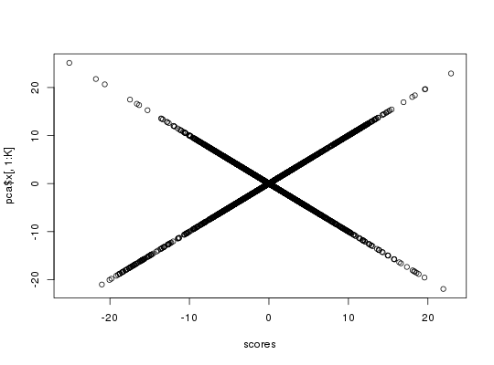
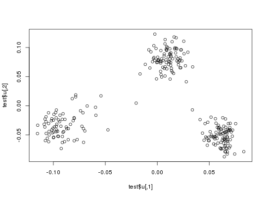

Randomized SVD
An algorithm for SVD (or PCA) of a big.matrix based on the algorithm
in RSpectra (by Yixuan Qiu and Jiali Mei).
This algorithm is linear in time in all dimensions and is very memory-efficient. Thus, it can be used on very large big.matrices.
big_randomSVD(X., fun.scaling, ind.row = rows_along(X.), ind.col = cols_along(X.), k = 10, tol = 1e-04, verbose = FALSE, ncores = 1)
Arguments
- X.
- Either a big.matrix or a big.matrix.descriptor.
- fun.scaling
- A function that returns a named list of
meanandsdfor every column, to scale each of their elements such as followed: $$\frac{X_{i,j} - mean_j}{sd_j}$$. - ind.row
- An optional vector of the row indices that are used. If not specified, all rows are used. Don't use negative indices.
- ind.col
- An optional vector of the column indices that are used. If not specified, all columns are used. Don't use negative indices.
- k
- Number of singular vectors/values to compute. Default is
10. This algorithm should be used to compute only a few singular vectors/values. - tol
- Precision parameter of svds.
Default is
1e-4. - verbose
- Should some progress be printed? Default is
FALSE. - ncores
- Number of cores used. Default doesn't use parallelism.
Value
A named list (an S3 class "big_SVD") of
-
d, the singular values, -
u, the left singular vectors, -
v, the right singular vectors, -
niter, the number of the iteration of the algorithm, -
nops, number of Matrix-Vector multiplications used, -
means, the centering vector, -
sds, the scaling vector.
Note that to obtain the Principal Components, you must use predict on the result. See examples.
Note
The idea of using this Implicitly Restarted Arnoldi Method algorithm comes from G. Abraham, Y. Qiu, and M. Inouye, FlashPCA2: principal component analysis of biobank-scale genotype datasets, bioRxiv: https://doi.org/10.1101/094714.
It proved to be faster than our implementation of the "blanczos" algorithm in Rokhlin, V., Szlam, A., & Tygert, M. (2010). A Randomized Algorithm for Principal Component Analysis. SIAM Journal on Matrix Analysis and Applications, 31(3), 1100–1124. http://dx.doi.org/10.1137/080736417.
See also
Examples
set.seed(1) X.desc <- big_attachExtdata() K <- 10 # Using only half of the data for "training" n <- nrow(X.desc) ind <- sort(sample(n, n/2)) test <- big_randomSVD(X.desc, fun.scaling = big_scale(), ind.row = ind, k = K) str(test)#> List of 7 #> $ d : num [1:10] 172.5 117.6 89.6 87.5 87.2 ... #> $ u : num [1:258, 1:10] -0.1015 -0.0914 -0.0951 -0.0798 -0.0901 ... #> $ v : num [1:4542, 1:10] 0.00304 -0.00274 0.02779 -0.01381 0.00599 ... #> $ niter: int 9 #> $ nops : int 162 #> $ means: num [1:4542] 1.32 1.6 1.56 1.69 1.05 ... #> $ sds : num [1:4542] 0.684 0.572 0.616 0.511 0.692 ... #> - attr(*, "class")= chr "big_SVD"plot(test$u)pca <- prcomp(attach.BM(X.desc)[ind, ], center = TRUE, scale. = TRUE) # same scaling all.equal(test$means, pca$center)#> [1] TRUEall.equal(test$sds, pca$scale)#> [1] TRUE# use this function to predict scores class(test)#> [1] "big_SVD"scores <- predict(test) # scores and loadings are the same or opposite plot(scores, pca$x[, 1:K])plot(test$v, pca$rotation[, 1:K])# projecting on new data ind2 <- setdiff(rows_along(X.desc), ind) scores.test2 <- predict(test, X.desc, ind.row = ind2) scores.test3 <- predict(pca, attach.BM(X.desc)[-ind, ]) plot(scores.test2, scores.test3[, 1:K])